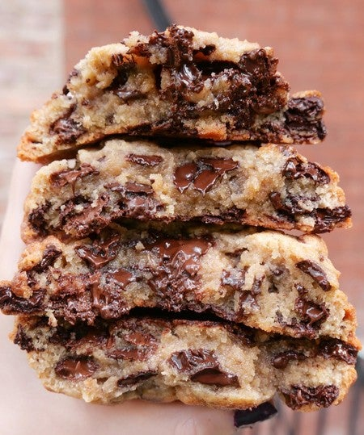

"These cookies don't dissapoint!" - Review of Levain Bakery
- 1 cup COLD unsalted butter cut into small cubes
- 3/4 cup light brown sugar
- 1/2 cup granulated white sugar
- 1¾ cups all-purpose flour
- 2 cups semi-sweet chocolate chips
Amount per serving:
Calories: 563
Fat:31g
Carbs: 71g
Protein: 7g